2. CETONI Elements Software
2.1. Lowering Log-Interval of CSV and Graphical Logger
The minimum value of the log interval in CETONI Elements is limited to 0.1 seconds. Because Windows is not a realtime operating system, there is always jitter when doing things in certain intervals. That means, when the log interval is set to 0.1 seconds it may be up to 0.11 or down to 0.09 seconds. So there is a jitter of ca. ± 10 ms.
The lower the log interval, the higher is the impact of this jitter on the precision of the recorded values. That means for a log interval of 0.1 seconds the jitter of ±- 10 ms will cause a deviation of 10%.
For a log interval of 0.01 seconds the jitter may cause a deviation of 100% - that means the interval of the recorded values reaches from 0.005 to 0.02 seconds. Therefore we decided to limit the log interval to a reasonable value of 0.1 seconds.
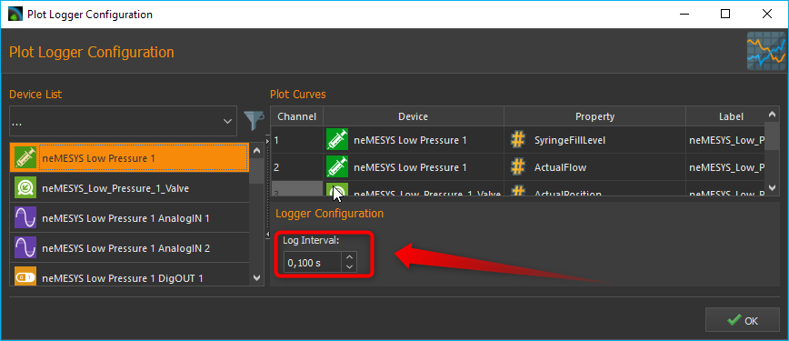To lower the minimum log interval of the CSV and graphical logger, you need to edit the current active device configuration.
To do this, select Device –> Browse Configuration Folder from the application main menu.
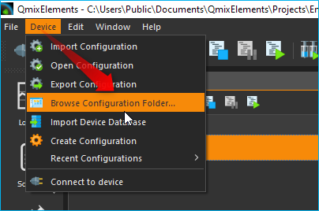Attention
It is not recommended to lower the interval below 0.01 seconds because the timestamps of the recorded values will not match the real timestamps and because the precision of the recorded timestamps is too low.
This will open the device configuration folder in the Windows file explorer. Then open the file
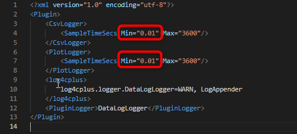datalogger.xmlin a text editor or XML editor.Now change the SampleTimeSecs Min value to the required minimum logging interval. Restart the CETONI Elements software and open the logger configuration – now you can lower the logging interval to the value entered in the
datalogger.xmlfile.Attention
Logging intervals below 0.01 seconds may cause high CPU load and may have a negative impact on other CETONI Elements functions.
2.2. Edit Device Parameters
You can edit device parameters directly in the CETONI Elements software using the CANopen Tools Plugin. Read the CANopen Tools Plugin documentation for detailed instructions how to use it.
Attention
Changing device parameters can cause malfunctions or cancel safety mechanisms. Only change device parameters as instructed by the technical support staff.
2.3. Export Device Configuration
If you need to export the device configuration so send it to CETONI support, please select the menu item from the application main menu.
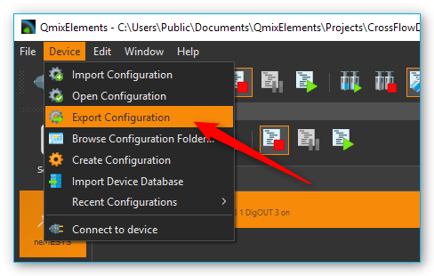2.4. Export Project
Currently CETONI Elements does not support the automatic export of complete projects. If you need to send a complete project including all settings to the CETONI support, you need to execute the following steps.
Select the menu item to open the project folder of the current project in file explorer.
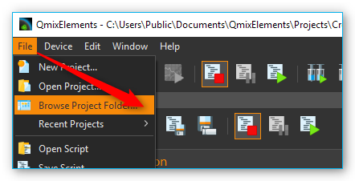The file explorer will open the project folder and show you the project files. Navigate to the parent directory of the project folder by clicking the parent directory name (figure below).
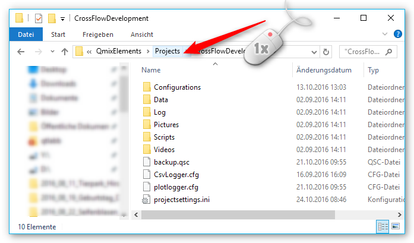If you are in the parent folder, you can see the project folder of you current project:
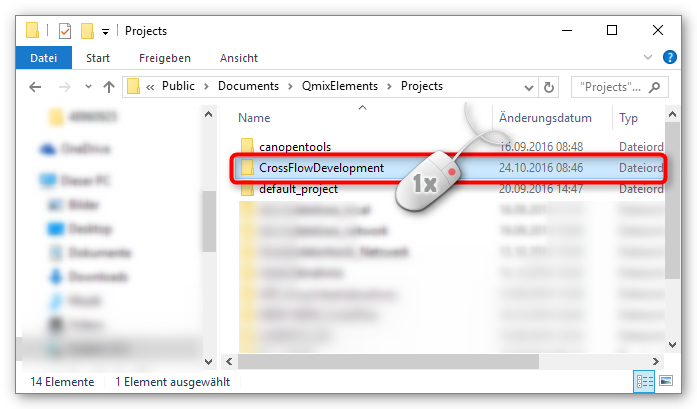Press and hold (or right-click) the project folder, select (or point to) Send to, and then select Compressed (zipped) folder. A new zipped folder with the same name is created in the same location that you can send to CETONI support.
2.5. Send Log-Files
The CETONI Elements log files are located in
c:\Users\Public\Documents\CETONI Elements\Log`. The main application log
file is CETONI Elements.log.
In case the CETONI support requests the log files, you can send the
QmixEleemnts.log file or you can send the compressed Log folder. To
send the compressed Log folder, navigate to the
c:\Users\Public\Documents\CETONI Elements directory. Press and hold (or
right-click) the Log folder, select (or point to) Send to, and
then select Compressed (zipped) folder. A new zipped folder with the
same name is created in the same location that you can send to CETONI
support.
2.6. Change PDO Inhibit Time
The PDO inhibit time is the time a device waits before sending a PDO if the value of the PDO has changed. The CETONI devices are delivered with default PDO inhibit times. If you need to change the PDO inhibit time, i.e. if you would like sample the data more often, you can do this with the CANopen Tools Plugin. Read the CANopen Tools Plugin documentation to learn how to open the CANopen Tools Workspace.
Attention
Changing the PDO inhibit time can cause malfunctions or cancel safety mechanisms. Only change the PDO inhibit time as instructed by the technical support staff.
Important
Backup your device parameters via before changing any parameters. This will allow you to restore the original configuration if something goes wrong or if you accidentally change a parameter that you did not want to change.
To change the PDO inhibit time, do the following steps after you have opened the CANopen Tools Workspace:
Connect to the device by clicking the Connect button in the main toolbar.
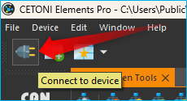Scan for the device by clicking the Scan Network button in the CANopen Tools toolbar.
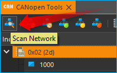Assign an EDS file to the node that you would like to change. right-click on the node and select . Select the EDS file that matches your device.
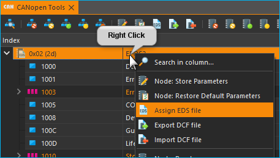Open the Transmit PDO parameters for the PDO that you would like to change. Normally the relevant object dictionary entries are 0x1800, 0x1801, 0x1802 and 0x1803.
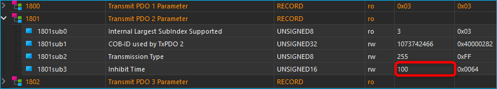Change the inhibit time to the desired value. The inhibit time is given in 100 µs units. For example, if you would like to change the inhibit time to 10 ms you need to enter 100 in the inhibit time field.
Save the parameters - right click on the node and select .
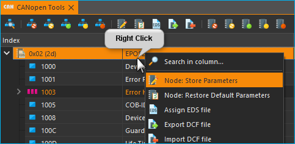